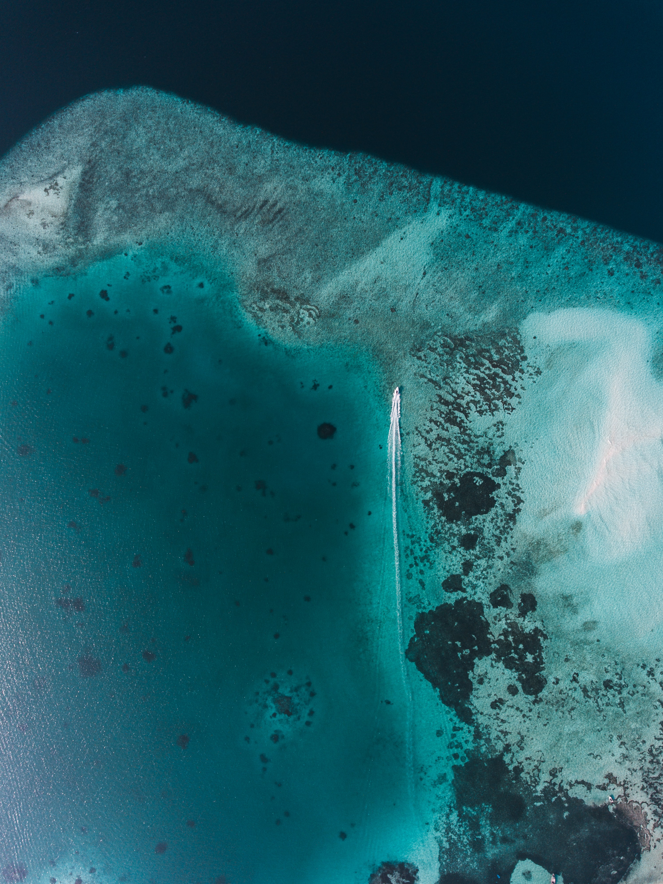

Pacific & Caribbean nesting grounds
Costa Rica protects some of the most important sea turtle nesting beaches in the Western Hemisphere. From the arribadas of olive ridley turtles at Ostional on the Pacific coast to leatherback nesting at Gandoca-Manzanillo on the Caribbean, this small nation has become a global model for community-based turtle conservation. The Marine Turtle Foundation partners with local conservatories and research stations to expand protection beyond the beach, into coastal forests, estuaries, and open ocean migration corridors.
Hatchery & arribada monitoring programs
Olive ridley, leatherback, green & hawksbill turtles
150+ volunteers, rangers & community members
Our Costa Rica program operates at the intersection of science and community stewardship. During nesting season, trained volunteers conduct nightly beach patrols along key stretches of the Nicoya Peninsula and southern Caribbean coast. Nests at risk from erosion, poaching, or high tourist traffic are carefully relocated to protected hatcheries where temperature and humidity are monitored around the clock.

Costa Rica's famous olive ridley arribadas are mass nesting events where thousands of turtles come ashore in a single night. Ostional, on the Nicoya Peninsula, is one of the most important arribada beaches in the world. Conservation here requires specialized strategies that balance protection with community needs. Local residents have a legally regulated tradition of harvesting a limited number of eggs during the first days of an arribada, and our teams work with the Ostional community to ensure that practice remains sustainable while the overall population continues to recover.
During arribada nights, the beach becomes a scene of extraordinary density. Females crawl over existing nests, and eggs laid too close to the surface are vulnerable to predation and heat stress. Our volunteers help mark nest boundaries, redirect traffic away from the beach, and collect data on the timing and scale of each event so that long-term trends can be tracked accurately.
On the southern Caribbean coast, Gandoca-Manzanillo Wildlife Refuge protects some of the most important leatherback nesting habitat in Central America. Leatherbacks are the largest sea turtles on Earth and among the most endangered. Females arriving here may weigh over 800 pounds and lay clutches of 80 or more eggs in nests dug deep into the sand. Our teams monitor these nests with satellite-linked temperature loggers that alert rangers when sand temperatures approach the threshold that produces all-female clutches.
The refuge also includes mangrove forest and lagoon habitat that juvenile turtles use as they grow. Water quality testing, mangrove restoration, and community education in nearby Limón province are all part of the Costa Rica program because leatherback conservation cannot stop at the high tide line.
Beyond the beach, we fund satellite tagging research to track leatherback migration routes across the Pacific, support school-based education programs in Limón and Guanacaste provinces, and advocate for reduced fishing bycatch in Costa Rican waters. Volunteers can join two-week conservation expeditions that include nest monitoring, data collection, and rainforest reforestation activities that protect the watersheds feeding turtle nesting beaches.
Costa Rica has shown the world that a small country with the right policies and community buy-in can become a global leader in wildlife protection. Our role is to support that model where it works and to push for stronger enforcement where gaps remain. Whether you join us in the field or support the program from home, you are contributing to one of the most respected conservation networks in the Americas.